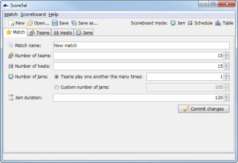

Match Tab
The main window's Match tab is used to set up overall match parameters, such as the numbers of teams, heats and jams. Configuring these parameters is normally the first step in setting up a match in Score5al; you should exercise care when changing match parameters for a match which has already been set up.

Score5al's match-editing tab
Match parameters
To make changes to the match parameters, simply edit the desired field(s) and press the 'Commit Changes' button. Note that your changes don't take effect until you click this button. See below for a description of what each parameter means.
Match name
You should set this to the official name of your Sur5al event, such as "Summer Sur5al Remix". This text will be displayed at the top of the scoreboard window next to the Sur5al logo.
Number of teams
Set this to the number of teams who will be taking part in your event. When reducing the number of teams, the teams with the highest numbers will be deleted, so be careful if you are changing a match where the schedule has already been created.
Number of heats
Set this to the number of heats in your event. The jams in the match will be distributed evenly between the heats; Score5al does not support match schedules with arbitrary numbers of jams per heat. If you change the number of heats in a match where the jam schedule has already been configured, the jam order will be preserved when redistributing the jams between heats.
Number of jams
By default, each team in a Sur5al event plays every other team once; however, you may change this if desired. You can either select a custom number of times for each team to play each other team, or you may select a completely abritrary number of jams. Note that using the latter option will result in an unfairly balanced jam schedule and is not recommended for competitive play. When reducing the number of jams, the appropriate number of jams are removed from the end of the match schedule.
Jam duration
By default, jams last 120 seconds (2 minutes). If your event uses a different jam duration, you can change it using this control. Any jams which have not yet been started will be updated to have the new duration.